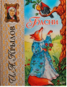

Басни

Крылов считал, что басня, как и всякое произведение искусства, должна быть проста и понятна: "А ларчик просто открывался!". Вот такими "ларчиками" с сокровищами народной мудрости и были его произведения. Многие выражения из написанных из 200 басен стали крылатыми, превратились в пословицы и поговорки. Пушкин считал, что басенному творчеству Крылова присуще "весёлое лукавство", характерное для русского склада ума. А после его смерти в 1844 году другой великий писатель, Николай Васильевич Гоголь, сказал о нём так: "Его притчи - достояние народное и составляют книгу мудрости самого народа".